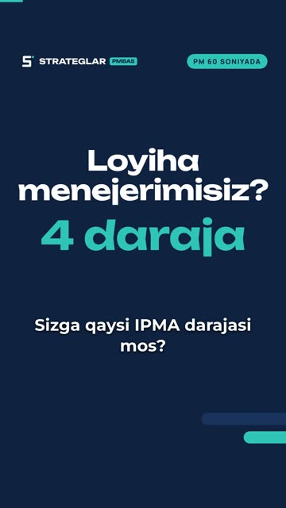
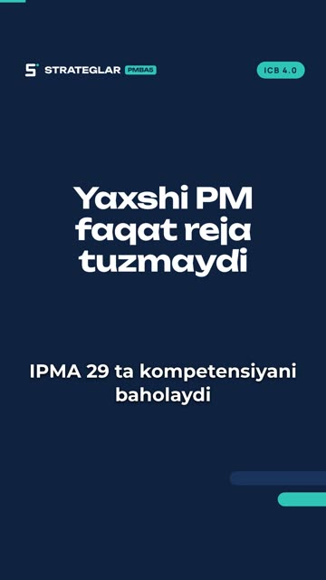
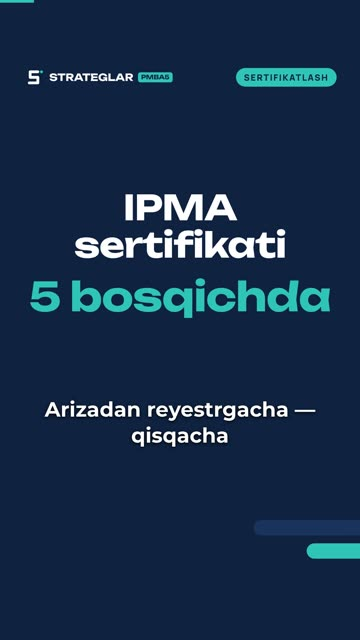
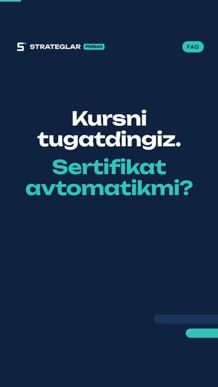
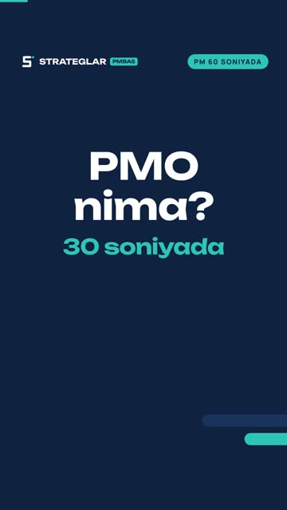
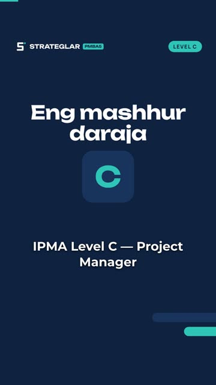

Bosh sahifa / Bilim markazi
Bilim markazi
IPMA, ICB 4.0 va sertifikatlash haqida qisqa videolar va tushuntirishlar. Har bir material 1–2 daqiqada o'qiladi yoki ko'riladi.
Qisqa videolar

40 sIPMA darajalari 40 soniyada
D — tajriba shart emas, C — 3+ yil, B — murakkab loyihalar, A — portfel va dasturlar.

36 sICB 4.0: 29 kompetensiya
Istiqbol 5, Odamlar 10, Amaliyot 14 — barcha darajalar shu asosda baholanadi.

30 sIPMA sertifikati 5 bosqichda
Ariza, hujjatlar tahlili, yozma imtihon, assessor bilan intervyu va reyestr.

30 sKurs tugadi — sertifikat avtomatikmi?
Yo'q: sertifikat faqat mustaqil baholashdan keyin beriladi va 5 yil amal qiladi.

30 sPMO nima?
Standartlar, portfel nazorati, resurs va hisobotlar, menejerlarni qo'llab-quvvatlash.

34 sLevel C: talablar
Eng mashhur daraja: 3+ yil tajriba, imtihon, keyslar va intervyu.
Ko'p beriladigan savollar
Sertifikat necha yil amal qiladi?
5 yil. Keyin qayta sertifikatlash uchun kasbiy rivojlanish (CPD) hisoboti topshiriladi.
Qaysi darajadan boshlash kerak?
Tajribangiz bo'lmasa — Level D. 3 yildan ortiq loyiha boshqargan bo'lsangiz — Level C.
Baholashni kim o'tkazadi?
Ikki nafar xalqaro sertifikatli assessor — intervyu 60–90 daqiqa davom etadi.
Rasmiy talablar qayerda?
PMBA rasmiy saytida: pbma.uz/sertifikatsiya/ipma